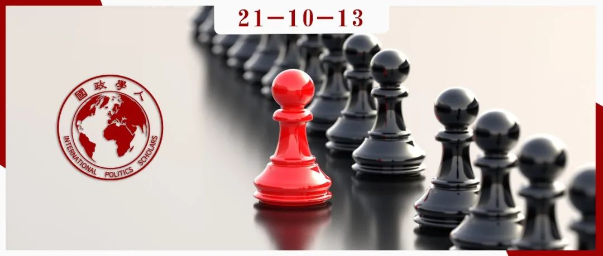
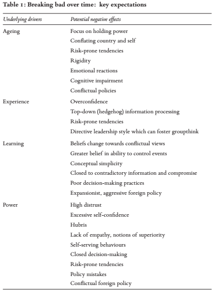
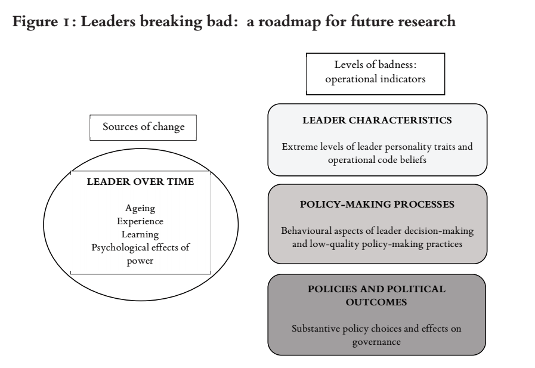

收录于合集 #外交政策 1个

作品简介
作者： Juliet Kaarbo是英国爱丁堡大学国际关系兼外交政策教授、爱丁堡安全研究中心联合主任，其研究领域集中在领导者人格与决策、团体动态、议会与政党等方面，她曾获国际研究协会2018年度“外交政策分析杰出学者”。
编译： 赵旌宏（国政学人编译员，吉林大学世界史系博士研究生）
来源： Juliet Kaarbo. New directions for leader personality research: breaking bad in foreign policy, International Affairs , 97: 2 (2021): 423-441.
归档： 《国际关系前沿》2021年第10期，总第37期。

内容摘要
领导者的人格特征会随时间而改变，本文探讨的核心问题是领导者如何、何时以及为什么会变得更倾向于威权、过度自信且更容易出错——“变糟”（break bad）？由于政治领导者的长期任职及其对国家内外政策的重要影响，领导者（人格）的时间演化成为了一个重要议题。当前有关领导者人格发展过程及其同不断变化的约束条件和机会相互作用的研究相对较少。本文是一篇 议题设定回顾，旨在推动外交政策分析朝着新的方向发展。 有鉴于人格研究的复兴以及对领导者研究所重燃的兴趣，本文通过借鉴 有关衰老、经验、学习、权力心理效应分析 等多元跨学科研究成果，提出了针对领导者人格变化的相关预期，同时指出了这一研究领域所面临的挑战，其间重点讨论了如何将领导者个体特质、决策过程、政策及其政治结果三大层面“坏（bad）”的极端程度概念化，以期为领域未来的研究方向提供具体路径参考。
文章导读
01
引言
诸如菲德尔·卡斯特罗（Fidel Castro）和弗拉基米尔·普京（Vladimir Putin）等曾经或目前长期任职的领导者在影响本国外交政策方面有着非凡的潜力。 根据长期以往的研究记录可知，无论是在民主国家还是在威权国家，领导者都塑造着本国的国家意图和战略，而他们本身亦是其国家外交能力的重要组成部分。 当前，研究人员已然超越了领导者重要性之论争，转而聚焦于领导者及其特征（包括他们的观念、认知偏见以及他们如何表征问题等）何以塑造国家外交政策。
本文的研究旨趣在于领导者人格是如何随着时间而变化的。 人格是认知、情感、动机和人际关系取向之间的模式化关系。尽管我们可能认为领导者人格是稳定的，但是其能够且确实会改变。现代人格理论确然没有假设过个体趋于恒定而维持不变，即便是普遍稳定的五大人格特质也会在一生中发生变化。此外，玛格丽特·赫尔曼（Margaret Hermann）指出， 一种特质在不同情境和时间（包括任职时间）中的永久性本身即是一种性格特征，之于不同领导者而言亦是因人而异。
我们对领导者人格如何、何时以及缘何发生变化知之甚少。除少数案例外，大多数有关领导者人格的研究着重关注某个时间点而非其演化过程。本文对那些变得更为专制、多疑或孤立的领导者的负面发展尤有兴趣。我们或许会期望长期任职的领导者能够向好发展，毕竟随着时间的推移，他们能够积累经验且有机会以前车为鉴。但是许多与领导力相关的心理过程表明，（这些）领导者（及其决策）或许会趋向失效，并陷入特定的“变糟”模式。芭芭拉•科勒曼（Barbara Kellerman）将这一现象总结为：当领导者继续掌权时，他们会养成坏习惯，他们越来越容易变得自满且浮夸，否认现实，并丧失其道德风度。
本文的研究目的在于依照先前的学术成果，从衰老、经验、学习以及权力的心理效应四个研究域中汲取经验，提出调查领导者人格随时间而变化的想法预期。在此基础上，本文以三个层次“坏”（bad）的概念化和操作化问题为重点，探讨这一研究领域所面临的挑战及其发展潜力，并就此为未来研究提供一些具体路径。 此外，本文的核心观点是：所有的领导者都可能容易“变糟”（发生消极变化）。
02
长期任职的领导者：新研究的理论基础
尽管在外交政策分析中，有关领导者特征影响的多数研究都是静态的，它们仅对领导者人格进行简要描述，并对单一的选择性要点进行解释，但是仍有部分令人信服的研究可以帮助我们推断领导者人格的发展走向。其中包括关于年龄、经验、学习和权力等相关要素的研究，这些要素相辅相成，共同构成了领导者人格变化的驱动力量。
a. 衰老。 年龄是领导者因时而变的特质之一。 所有人都易在衰老过程中受到已知心理影响，即便是最有权势的领导者亦无例外。长期任职的领导者在执政期间可能会经历不同的人生阶段且易受到衰老的影响。大多数政治领导者并不年轻，在领导者经验和特质描述（LEAD）数据源中，领导者的平均年龄为57岁。毕竟 政治领导是中老年人的游戏，领导者的年龄直接关系到外交政策结果。
实际上，在生命回顾阶段（生命后期阶段），衰老的领导者可能不愿放弃权力。根据杰罗尔德·普斯特（Jerrold Post）的观点，上了年纪的威权者或许愈发将自己视为其国家的代名词，而且可能很晚才能意识到其压制政策已然酝酿出诸多不满。其他学者提供了类似的解释，即由于年长的领导者（在大多数政体类型中）的时间跨度更短，他们较年轻的领导者而言更倾向于挑起或激化军事争端。
年长领导者的时间跨度较短或许同衰老所伴随的严重疾病有关。 一方面老化伴随病可能会产生严重的心理后果，包括思维僵化、固执己见、记忆力和判断力等智力能力减退、情绪反应和情绪波动加剧、情感淡漠以及早期人格特质的再现和放大。另一方面，心理后果也可能由基础疾病的药剂处理方式（处方或自行用药）所引发。即便领导者没有受到疾病的生理性困扰，致命疾病所带来的心理冲击同样会对领导者的政治行为和决策产生重大影响。此外，领导者的健康损害还可能产生更为广泛的决策影响。领导者顾问可能会“挟天子以令诸侯”，或试图利用这种情况谋取个人或政治利益。
b. 经验：从新手到行家。 任职时间越长，领导者的政治经验就越多。这既包括一般政治领导经验，也包括领导者在应对政策问题、政治机构和其他领导者方面的特殊经验。经验可能会将领导者由“狐狸”转变为“刺猬”，前者接受既定外交政策结果产生的多种解释，并注重外交政策问题的特殊性；而后者则会根据某种包罗万象的理论推断出可能的外交政策结果和事件。神经学层面已然发觉经验的影响力。实验性脑成像研究表明，同新手相比，经验丰富的决策者大脑的某些区域有明显的激活。 总而言之，可以推论初始政治经验较少的领导者随着时间推移而发生的变化最大，其学习曲线更为陡峭。
长期累积的一般政治经验可以对决策过程和结果产生双面影响。 从积极的方面来看，富有经验的精英表现出更具战略性和合作性的行为，更加有效地运用启发法并操纵迭代游戏，且对其他玩家有着更加清楚的认知。 经验可以改善领导者的决策方式。 然而，经验也会带来一些负面影响。经验同高估自身能力和/或低估对手、任务的难度或可能的风险有关。与专业的“刺猬”相比，缺乏经验的“狐狸”更擅长对国际政治做出预测，并在犯错后更新其先入之见；“刺猬”则可能过于关注问题的深层逻辑，反而忽略其重要的表面特征。此外， 经验还可能促使领导者愈发主导决策过程，从而减少对其顾问的依赖。 更多的个体参与或许有助于更为有效的领导；但它亦可能产生类似于群体思维的从众行为，致使团体服从有指导性而非无偏见的领导者。
c. 学习：信念的改变。 除在职位上获得更多的一般经验外，领导者任职时间越长，便越有机会改变其特定的信念。 出于很多心理原因（阻碍改变的心理抑制因素），我们预期领导者的信念会保持稳定。然而，即便存在这些因素，领导者仍然可以改变他们的信仰、世界观、处理问题的方式、基本假设以及对他人的印象。
操作代码分析（OCA）捕捉领导者的总体世界观，一直处于领导者信念内容（随时间而变化）研究的前沿。操作代码分析有关信念改变的其他研究考察了哪种类型的领导者会学习，哪种信念更有可能改变，以及是什么促使信念改变等问题。可以推论领导者能够从过往的成功或失败中借鉴学习，而信念的改变通常与领导者应对的关键事件有关。
领导特质分析（LTA）研究也验证了领导者信念的变化。领导特质分析是领导者人格分析的综合方法，包括特质、动机和信念（诸如对掌控事件能力的信念）。随着时间的推移，少数应用领导特质分析的研究普遍证实领导者对自己掌控事件能力的信念是稳定的。然而，其他研究却发现这种信念有所变化。相较而言，具有更强控制意识的领导者可能更愿意挑战约束条件，更乐于参与决策，但不太愿意接受具有挑战性的信息，也不太可能妥协，更容易导致低质量决策。除信念内容外，领导者还可能改变其认知结构。整体而言， 操作代码分析和领导特质分析对领导者的研究表明，执政时间越长，领导者的信念和认知结构越有可能发生变化，而这些变化则可能会导致糟糕的结果。
d. 权力的心理效应。 长期掌权可能会在其他方面根本改变领导者人格。 不同领域的研究表明，权力本身能够影响领导者的特质、动机和精神过程。 领导者特质分析的特征之一——不信任感（对他人的怀疑和警惕）的增长或许是领导者趋于威权的关键。可以想见，日益增长的不信任将伴随着封闭的决策、对批评的高度敏感、对不同意见的零容忍、总体糟糕的决策实践和冲突的外交政策，包括在国外使用军事力量以转移人们对国内事务的注意力。
领导者执政的动机也可能在他们执政的过程中发生变化。 实际上，掌握政治权力可能会强化领导者的权力动机。而长期掌权能够增强领导者的自信，过度自信则可能导致更多的冒险行为，包括导致战争和糟糕政策绩效的决定。
近期，社会、认知和神经心理学领域有关掌权心理影响的研究普遍认为傲慢是掌权的结果。这项社会认知研究已经证明， 权力会影响人们的感觉、思考和行动。 相关研究表明，行使权力可以增强自尊、自信、对威胁和损失的忧虑、优越感、对他人的客体化和刻板印象，并同自我权利及合法性的感觉相联系，利用权力来满足个人的需求。大脑图像研究发现，当实验对象的权力“启动”时，与同理心相关的镜像神经元会受损， 换言之，权力可以使人冲昏头脑。
心理学研究还强调了语境和情境因素的重要性。相关研究表明，当一个人处于凌驾于他人之上的权力地位时，其心理构成会发生变化。
e. 总结“变糟”的驱动因素。 值得注意的是， 来自不同领域的研究项目具有显著的相似之处：即领导者具有共同的轨迹。 造成变化的潜在驱动力处于互补而非竞争关系之中，随着时间的推移，它们可能会互相强化影响。
表1 随时间推移的消极变化：核心预期

03
调查“变糟”（消极变化）
实际上，在对领导者作“坏（bad）”的归类时，最好避免为其贴上或“好”或“坏”的标签。毕竟，糟糕的领导者也可能会做好事。对政治领导力的研究强调，个体性格特质的有效性取决于语境和情境：一种情境中的“好”在另一种情境中可能是“坏”的。 任何规范性动机研究都面临着偏见问题，“好”与“坏”的评判往往取决于观察员的政治观点。
将领导者的特质和行为概念化是可行的，但这必须在特定的背景下进行，并具备特定的操作指标，以尽量减少多重含义和主观性的问题。本文将“坏（bad）”的概念划分为多个层次，包括 个体领导者特征层面、决策过程层面、政策及其政治结果层面 （见下图1）。关注各层次极端程度的“坏”有助于解决一些概念性和规范性挑战。

图1
a. 个体领导者特征层面。 领导特质分析框架中的所有7个特征都与上文所述的关于领导者如何犯错的见解非常吻合。换言之， 随着时间的推移，可以从经验上捕捉和跟踪领导者发生消极变化的程度。 尽管这些特质在多数情境中可能是有效的，但是对低质量决策和糟糕领导者的研究表明，（“坏”的）极端程度通常是悬而未决的。然而，领导特质分析和操作代码分析已然生成了一个领导者档案库，我们可以将领导者同规范化团体进行比较以判断其是否趋向极端。如若任何特质或核心信念表现出极端价值，我们便可以识别出糟糕的领导者。
b. 决策过程层面。 通过定性过程跟踪案例研究，可以观察到决策过程中的一些不良表现。以往有关僵化刻板、缺乏同理心、放纵、过度或不充分地参与决策等方面的研究为明晰这些决策特征提供了明确定义和良好实践。 在广泛的案例研究素材中可以找到糟糕决策的证据来源， 其中包括当时或事后对他人的判断；分析员事后的判断；领导者的声明（最好是私下表达的）；背叛领导者认知和情感的事实（政策、决定、行动）以及领导者预期与实际结果间的比较。
c. 政策及其政治结果层面。 糟糕的政策选择和政治结果体现了领导者人格变化的潜在重大影响。其中包括治理不善：不良政策（考虑不周和/或执行不周）以及政府政策对社会产生的不良后果。人们普遍认为糟糕的政策及其结果涵盖极端冲突行为。虽然冲突政策可能用于好的目的，但在现代规范和政治语境中，侵略往往被视为其他手段失败后的最后选择，以此被认为是糟糕的政策。糟糕的结果也可以被描述为错误、惨败或失败。总体而言，鉴于长期任职的领导者容易犯错的强烈预期，在结果层面对其进行经验性评估是有价值的。
一言以蔽之，尽管不同层面“坏”的关系并非是决定性的，但是可以推断糟糕的领导特质会导致糟糕的决策过程，而糟糕的决策同样会造成治理不善的糟糕结果。
04
未来的研究方向
a.“变糟”的模式是什么？ 一种内向模式表现为领导者变得偏执、孤僻、不信任、多疑和僵化；另一种更为外向的模式则表现为领导者过度傲慢、过度自信和浮夸。这两种类型的领导者都可能具有高度的权力动机，也都可能犯错误，但其错误的性质或许有所不同。领导特质分析和操作代码分析可以识别这些发展模式，诸如极端特征或信念的渐进或突然变化。
b.“变糟”的政策效应是什么？ 为了解决这一问题，可以将领导者任期与政策结果相关联，并将领导者的个体特征纳入其中，以探索时间与自信和政策结果之间可能存在的关系和互动效应。案例研究和定量分析等均是可行的研究方法和工具。
c.“变糟”最重要的触发因素是什么？ 案例研究将是追踪领导者人格因时而变的最适当方法。为了解决这一问题，我们只能关注涉嫌变坏的领导者案例，或者研究每个长期任职的领导者案例以探讨衰老、经验、学习和权力在其间所扮演的角色。我们还可以选择案例来区分人格变化背后的不同驱动因素，例如，将长期任职领导者的不同阶段进行比较；将经验丰富领导者同缺乏经验的领导者作比较；抑或是将屡屡成功的领导者同屡屡失败的领导者作比较。
d. 哪种性格的人更容易发生消极变化? 为了有效地解决这个问题，我们同样可以选取案例进行比较。以理想主义愿景开始执政的领导者是否更有可能幻灭?概念上的复杂性是否能从心理层面防止个体变得过于自信?开放包容的领导风格会抑制同理心的丧失吗？
附加层面： 有关领导者不断变化的人格是如何同其政治、情境和制度语境相互影响的？上述问题以及更多需要解决的问题均是领导力和外交政策的核心。随着时间的推移，调查领导者的重要性、对领导者消极变化的研究将是一项颇有价值的努力。这些领导者及其人格特征对他们所统治国家的政策和政治以及更为广泛的国际关系具有重要影响。理解其中一些人是如何、何时以及为什么会“变糟”，是理解其领导力的关键所在。
译者评述
本文的突出价值在于其研究问题新颖，能够为以往的领导者人格研究乃至外交政策分析提供新的问题导向和研究路径参考。文章突破以往领导者研究局限于阐释某一时间节点或具体事件中领导者特质同政治结果间因果关系的弊端，从时间性的角度出发，将领导者人格视为某种演化过程（大概率趋向消极变化），其中对国际政治产生重大影响且长期任职的领导者则成为其研究样本。文章运用跨学科的多元方法工具，论证了年龄衰老、经验多寡、信念改变以及掌权的心理效应是促成领导者人格及其政策绩效“变糟”的驱动因素，并尝试从领导者个体特质、决策过程以及政策和政治结果层面将“坏”概念化，从而在特定的情境和条件下提供了所谓“糟糕”的评判标准。然而，正如作者所言，任何规范性动机研究都面临着偏见问题，“好”与“坏”的评判往往取决于观察员的政治观点，换言之，价值判断中人的主观性无法避免地干扰着“坏”的概念化和规范化，这将成为该领域未来研究所面临的重要挑战。本文的重要意义在于将探讨领导者人格如何因时而变的多元研究观点进行合理化整合，也正是由于涉及领域案例广博，偶有层次混淆的问题（如信仰和信念）。无论如何，本文之于外交政策研究领域的开拓性价值不言而喻，文末通过自问自答的形式指出领导者人格研究的新议程、新方向，并提出相对可行的研究方案建议，对相关问题域研讨的拓展深化意义斐然。
词汇整理
领导者人格 Leader Personality
操作代码分析 Operational code analysis
领导特质分析 Leadership trait analysis
认知结构 Cognitive Structures
治理不善 Bad Governance
责编 | 晋玉 黎开朗
排版 | 邱意雯 游钜家
文章观点不代表本平台观点，本平台评译分享的文章均出于专业学习之用, 不以任何盈利为目的，内容主要呈现对原文的介绍，原文内容请通过各高校购买的数据库自行下载。

国政学人
支持学术公益与知识传播
微信扫一扫赞赏作者 __赞赏
已喜欢，对作者说句悄悄话
取消 __
发送给作者
发送
最多40字，当前共字
上一页 1/3 下一页
长按二维码向我转账
支持学术公益与知识传播
受苹果公司新规定影响，微信 iOS 版的赞赏功能被关闭，可通过二维码转账支持公众号。